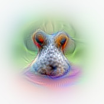

Machine Learning and AI
What is machine learning?
science of getting computers to act without being explicitly programmed
Motivation: How does data processing work?

Creating the 'model' with Classic Coding

Creating the 'model' with Supervised Machine Learning

Unsupervised learning works without training and human supervision
Applications of machine learning?


Machine learning has become mainstream

An add from BART train, Bay Area
Main application of Supervised Learning: Classification

Regression is the other: inferring a continuous function from given data points
Is classification at all relevant?
Should a car break or not?
Does that look like breast cancer or not?
Should this pixel of a b/w picture be blue?
Does this look like a fraud transaction?
Will the machine code branch here?
Machine Learning vs Artificial Intelligence

Can Machines really think?
- Weak AI hypothesis: it is sufficient to simulate thinking
- like in: birds do real flying, planes only simulate flying
- if something can not be differentiated from real thinking is the only objective for AI anyway (Turing test)
- Strong AI hypothesis: machines are only intelligent if they do the real thing
- is the machine really conscious like a human?
- poses the philosophically much more interesting questions
Turing said: if you ever experience an intelligent machine, such a distinction would not make more sense than asking if the other people do real thinking either
Artificial Neural Networks
Class of machine learning strategies
Mostly used for
- supervised learning
- classification
Based on the idea of simulating brain functions
Illustrating Neural Networks

Using the Tensorflow Playground
Deep Learning

Classification example: MNIST
- images of handwritten digits
- set of image exists for training
- used to recognize postal codes
- classification problem
Convolutional Networks (CNN)
special networks to process images
using different kinds of specialized layers
often used with pre-trained models
Convolutional Networks
turning shallow, but large data into deep semantic information
- some layers turn input into a number of filtered outputs
- other layers down sample images (giving them a lower resoluation)
- each layer adds semantic information

Udacity Course 730, Deep Learning (L3 Convolutional Neural Networks > Convolutional Networks)
Layout of a typical CNN
 http://cs231n.github.io/convolutional-networks/
http://cs231n.github.io/convolutional-networks/
Intuition for Convolutional Networks
E.g. to recognize dogs (again a classification problem)

using an internal representation like
https://auduno.github.io/2016/06/18/peeking-inside-convnets/
Demo: Limits of all pattern recognition
The great ugly writing competition
Main Challenge: What is the best configuration for a given problem?
That means what architecture: How many layers, how many neurons, which activation function?
Solution: Try it out ...
... using searches over a set of hyper-parameters (might be expensive)
Or: use a pre-trained network (by people who have done that job for you already)
Google Inception Convolutional Network architecture to classify images

Sometimes it is not that easy...

Dog vs Muffin
TensorFlow finds the Chihuahua!
TensorFlow is the full version of the Playground

Chihuahua (score = 0.68340)
Pomeranian (score = 0.02451)
Pekinese, Pekingese, Peke (score = 0.00751)
toy terrier (score = 0.00716)
beagle (score = 0.00645)
Using the pre-trained Inception model
It even found out about my secret ...

... on the other hand

Try out CNN based Image Services
- Google: https://cloud.google.com/vision
- Microsoft: https://www.microsoft.com/cognitive-services/en-us/computer-vision-api
Upload pictures to both of them and see how they are doing
Caution: No need to create an account or register to try any of them
Question: Do you think it is coincidence the two big search engine providers have such powerful models for image recognition?